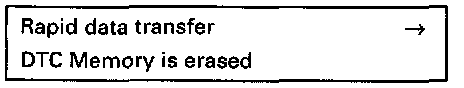

Erase DTC Memory (Function 05)
Special tools, testers and auxiliary items- VAG 1551/1552 scan tool with VAG 1551/3 adapter cable.
Test conditions:
- Malfunctions eliminated
- Engine coolant temperature must reach at least 80°C (176°F)
NOTE: If DTC memory is erased, the repair must be verified via the appropriate display group. Readiness Code - Reading / Creating
Work sequence:
- Connect VAG 1551/1552 scan tool and select "Engine Electronics" address word 01. Connecting and Selecting "Engine Electronics" address word 01When doing this engine must be running at idle speed.
Indicated on display
- Press buttons-0- and -2- to select "Check DTC Memory" function 02 and press -Q- button to confirm input.
- Press -> button until all malfunctions still stored have appeared and the display reads:
- Press buttons -0- and -5- to select "Erase DTC Memory" function O5 and press -Q- button to confirm input. Repair malfunctions as necessary.

Indicated on display
- Press -> button.

Indicated on display
- Allow the engine to idle for at least 1 minute and check DTC memory again.
If no malfunction is displayed:
- Press buttons -0- and -6- to select "End Output" function 06 and press -Q- button to confirm input.
- Road test the vehicle for at least 10 minutes.
Road test procedure:
- Engine coolant temperature must reach at least 80°C (176°F)
- Briefly depress accelerator pedal to wide open throttle when engine speed is above 4600 RPM.
- Check DTC memory again, no malfunctions should be shown.
- Create readiness code. [1][2]Monitors, Trips, Drive Cycles and Readiness Codes
NOTE:
If the same malfunction is stored in DTC memory after the test drive, check control module coding. Programming and Relearning